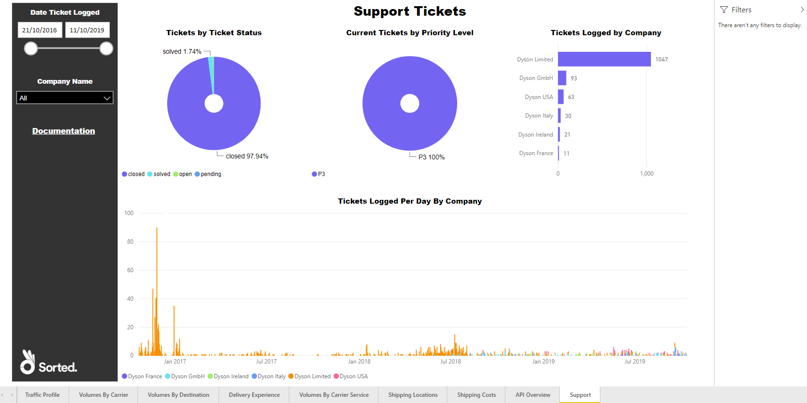
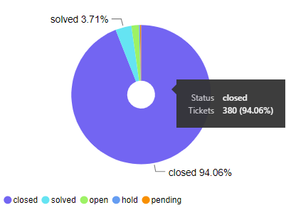
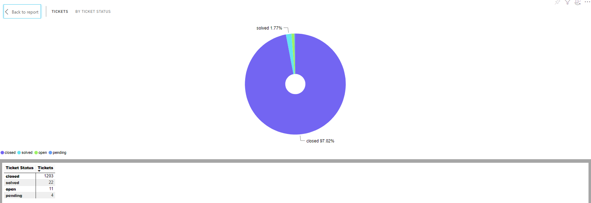
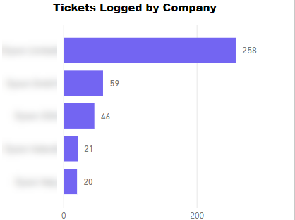
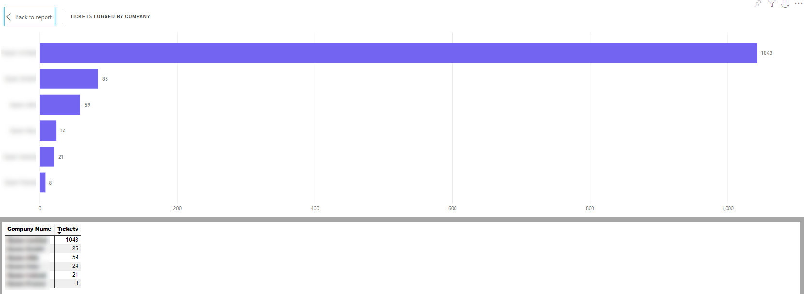
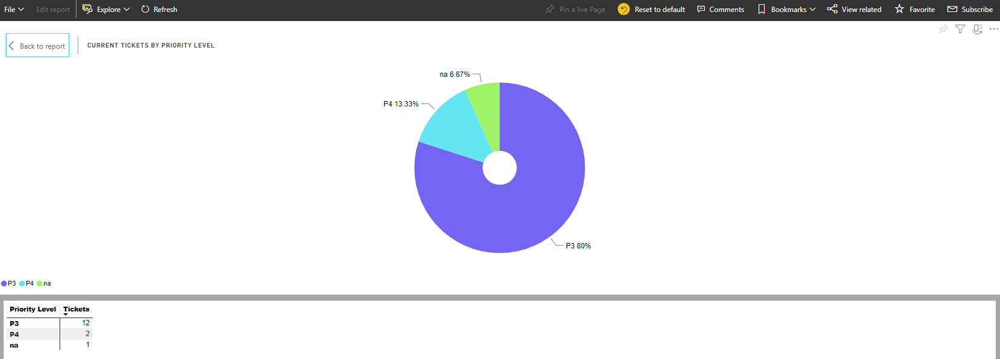
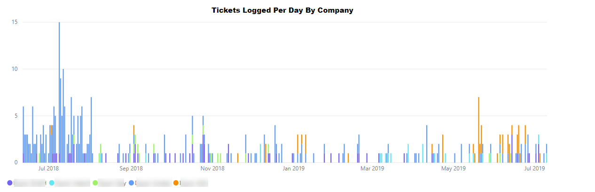
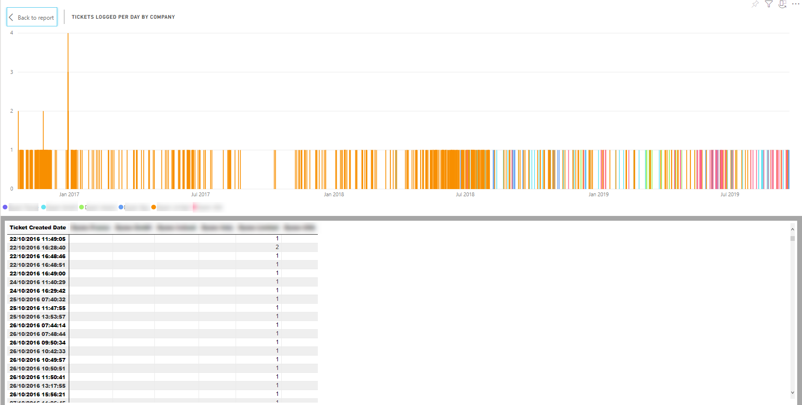

Support
The Support report enables you to get an overview of your organisation's current and past support tickets.
It comprises a Tickets by Status pie chart, a Tickets Logged by Company bar chart, a Current Tickets by Priority Level pie chart, and a Tickets Logged Per Day By Company chart.
Report Filters
The Support report offers the following report-wide filters:
- Date Tickets Logged - enables you to select only those calls that were made within a given date range.
- Company Name - where applicable, enables you to select only those calls that were made by a particular company within your group. You can select multiple companies if required.
Tickets by Ticket Status
The Tickets by Ticket Status chat shows what proportion of your support tickets is in each of the support statuses.

Hover your mouse over a section of the pie chart to view the number of your tickets that are in each status.
Visual Filters
You can filter the ticket statuses displayed on the Tickets by Ticket Status chart using the following filters:
- Status (Basic and Advanced) - enables you to select all tickets in a particular status. You can select multiple statuses if required.
- Tickets (Numerical) - enables you to select only those statuses that have a certain number of tickets in them. For example, if you were to filter on is greater than 1000, then any statuses in which were were fewer than 1000 tickets would be ignored.
More Options
The following options are available from the More Options menu:
- Open Comments
- Export Data
- Show Data
- Spotlight
- Sort Descending
- Sort Ascending
- Sort by Status / Tickets
You can also view the records that the visual's data was generated from by right-clicking on it and selecting View Records from the pop-up menu.
Viewing Data
The Tickets by Status chart's Show Data option shows how many of your support tickets are in each of the support statuses.
Tickets Logged by Company
The Tickets Logged by Company bar chart shows how many support tickets each of your companies has logged.
Visual Filters
You can filter the companies displayed on the Tickets Logged by Company chart using the following filters:
- Company Name (Basic and Advanced) - enables you to select one or more companies to view.
- Tickets (Numerical) - enables you to filter by number of tickets logged by each company. For example, if you were to filter on is greater than 1000, then any companies that had logged 1000 or fewer tickets would be ignored.
More Options
The following options are available from the More Options menu:
- Open Comments
- Export Data
- Show Data
- Spotlight
- Sort Descending
- Sort Ascending
- Sort by Company Name / Tickets
You can also view the records that the visual's data was generated from by right-clicking on it and selecting View Records from the pop-up menu.
Viewing Data
The Tickets Logged by Company chart's Show Data option shows how many support tickets each of your companies has logged.
Current Tickets by Priority Level
The Current Tickets by Priority Level chart shows how many of your open tickets are in each of the various priority levels.

Hover your mouse over a section of the pie chart to view the number of open tickets in that priority level.

Visual Filters
You can filter the priority levels displayed on the Current Tickets by Priority Level chart using the following filters:
- Priority Level (Basic and Advanced) - enables you to select one or more companies to view.
- Tickets (Numerical) - enables you to filter by number of tickets logged by at each priority level. For example, if you were to filter on is greater than 10, then any levels at which 10 or fewer tickets were logged would be ignored.
More Options
The following options are available from the More Options menu:
- Open Comments
- Export Data
- Show Data
- Spotlight
- Sort Descending
- Sort Ascending
- Sort by Priority Level / Tickets
You can also view the records that the visual's data was generated from by right-clicking on it and selecting View Records from the pop-up menu.
Viewing Data
The Current Tickets by Priority Level chart's Show Data option shows the number of open tickets you have in each of the priority levels.
Tickets Logged Per Day By Company
The Tickets Logged Per Day By Company chart shows the total number of tickets logged by each of your companies on any given day.
Visual Filters
You can filter the data displayed on the Tickets Logged Per Day By Company chart using the following filters:
- Created Date (Basic, Advanced, and Relative Date) - enables you to specify a date or date ranges to view.
- Customer Name (Basic and Advanced) - enables you to select one or more customers.
- Tickets (Numerical) - enables you to filter by number of tickets logged by each company on a given day. For example, if you were to filter on is greater than 10, then any data points in which the company in question had logged 10 or fewer tickets on that day would be ignored. In this example, the y-axis of the graph is effectively skewed so that it starts at 10 rather than 0.
More Options
The following options are available from the More Options menu:
Viewing Data
The Tickets Logged Per Day By Company chart's Show Data option shows how many tickets each of your companies logged on any given day.